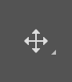
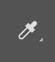
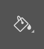
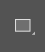
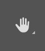

| Icon | Name | Description | Example |
|---|---|---|---|
|  | Move Tool (v) | This tool allows you to move layers around on the canvas. You must make sure that you have the layer you want to move selected before trying to move it. If you have snapping enabled, then you may notice blue lines appearing as you move the layer around the canvas. | |
| Crop Tool (c) | Cropping an image makes it smaller. Make sure when you crop an image, you are wanting to make the image smaller, and not something in the image bigger. Cropping is best used for photos when you are wanting to crop something out of the image, or make the image a different size, such as square or portrait. | ||
|  | Eyedropper Tool (i) | This tool is often overlooked, and will allow you to sample any colour that you like the look of. Just load the image with the colour you want into Photoshop and click on the colour with the eyedropper tool. You can also right click on the colour to get its HTML or HEX colour value. | |
| Brush Tool (b) | The brush tool lets us draw. You can change the size of the brush, the softness of its edges and its colour. Have a look at seeing what changing each one of these does. | ||
| Eraser Tool (e) | The eraser tool does exactly what you would expect it to do - it erases part of your layer wherever you click. You can change the size of the eraser to erase bigger or smaller parts of the image, and the softness of the edge of the eraser to help give a softer edge to what you leave behind. | ||
|  | Paint Bucket Tool (g) | The paint bucket fills a space made up of the same colour with a colour of your choosing. This makes it easy to get a quick background colour down, among other things. | |
| Type Tool (t) | The type tool lets us put text into our image. There is also the vertical type tool if you wish your text to flow vertically. Clicking anywhere in the canvas creates a textbox, into which we can type. Clicking on text with the type tool will allow you to edit it. You can change the text's font, colour and style while the type tool is selected, just make sure you have highlighted the text you want to change. | ||
|  | Rectangle Tool (u) |
The rectangle tool is one of many shape tools that allows you to draw the specified shape with a
colour fill and an outline. Just click and drag on the canvas with the rectangle tool selected to use it.
Experiment with the different options of the rectangle tool,
and then look into the other shapes you can draw - there are lots to choose from! (Hint, right click on the rectangle tool to find the other shapes) |
|
|  | Hand Tool (h) | The hand tool lets you move around the canvas. This is generally used if you are zoomed in on an image and need to move around to different areas. | |
| Zoom Tool (z) | The zoom tool lets you zoom in on the canvas. Zoom as far as it will let you, and you will see your image's true form - a series of coloured squares, called pixels. Hold down the alt key and click to zoom out. |